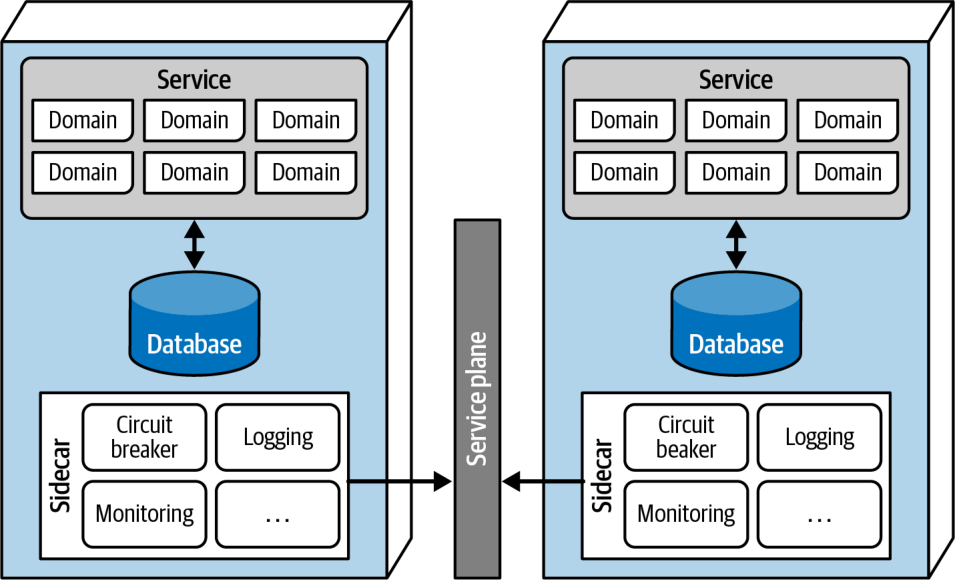
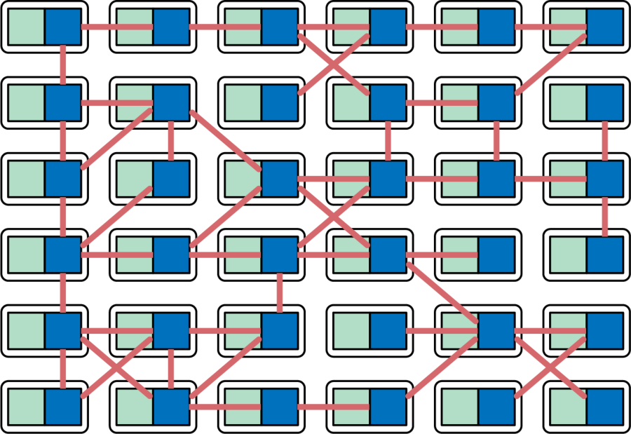
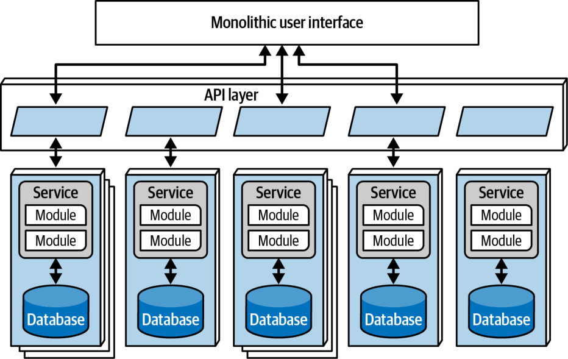

ویژگیهای خاصِ سبک (ادامه)
جداسازی داده
یکی دیگر از الزامات میکروسرویسها، که آن هم از مفهوم زمینهٔ محدود سرچشمه میگیرد، جداسازی داده (data isolation) است. بسیاری از سبکهای معماری برای ماندگاری دادهها از یک پایگاهدادهٔ واحد استفاده میکنند. اما سبک میکروسرویسها میکوشد از همهٔ انواع کوپلینگ پرهیز کند؛ از جمله استفاده از طرحوارهها و پایگاهدادههای مشترک بهعنوان نقطههای یکپارچهسازی.
جداسازی داده عامل دیگری است که هنگام بررسی دانهبندی سرویسها باید در نظر گرفت. از تلهٔ موجودیت (Entity Trap؛ که در بخش «تلهٔ موجودیت» در صفحهٔ ۱۱۵ بررسی شد) برحذر باشید: سرویسها را صرفاً به شکل موجودیتهای منفرد یک پایگاهداده مدل نکنید. معماران عادت دارند از پایگاهدادههای رابطهای (relational databases) برای یکپارچهکردن مقادیر درون سیستم استفاده کنند و به این ترتیب یک منبع واحد حقیقت (single source of truth) بسازند؛ اما وقتی دادهها را در سراسر معماری توزیع میکنید، این دیگر گزینهای در دسترس نیست. بنابراین هر معمار باید تصمیم بگیرد که میخواهد این مسئله را چگونه حل کند: یا یک حوزه را منبع حقیقتِ یک واقعیت مشخص تعیین کند و برای بازیابی مقادیر با آن هماهنگ شود، یا اطلاعات را از راه تکثیر پایگاهداده (database replication) یا کشگذاری (caching) توزیع کند.
این سطح از جداسازی داده دردسرهایی پدید میآورد، اما فرصتهایی هم فراهم میکند. اکنون که تیمها ناچار نیستند حول یک پایگاهدادهٔ واحد یکپارچه شوند، هر تیم میتواند مناسبترین فناوری پایگاهداده را بر پایهٔ بودجهٔ سرویس خود، نوع ساختار ذخیرهسازی، ویژگیهای عملیاتی، ویژگیهای فرایندی و مانند آن برگزیند. مزیت دیگر یک سیستم با کوپلینگ بسیار کم این است که هر تیم میتواند مسیرش را تغییر دهد و پایگاهداده (یا وابستگی دیگری) مناسبتر برگزیند، بیآنکه بر تیمهای دیگر اثر بگذارد؛ زیرا آن تیمها اجازه ندارند به جزئیات پیادهسازی کوپل شوند. (جداسازی داده و ملاحظات پایگاهداده را در بخش «توپولوژیهای داده» در صفحهٔ ۳۴۸ با جزئیات بیشتری بررسی میکنیم.)
لایهٔ API
بیشتر معماریهای میکروسرویس یک لایهٔ API (API layer) دارند که معمولاً دروازهٔ API (API Gateway) نامیده میشود و میان مصرفکنندگان سیستم (چه رابطهای کاربری و چه فراخوانیهایی از سیستمهای دیگر) و میکروسرویسها قرار میگیرد. لایهٔ API را میتوان به شکل یک پراکسی معکوس (reverse proxy) ساده پیادهسازی کرد، یا به شکل دروازهای پیچیدهتر که دغدغههای میانبُرشی (cross-cutting concerns) مانند امنیت، سرویسهای نامگذاری (naming services) و مانند آن را در خود دارد (این موارد را در بخش «بازاستفادهٔ عملیاتی» با جزئیات بیشتری بررسی میکنیم).
لایههای API کاربردهای فراوانی دارند، اما برای وفادار ماندن به فلسفهٔ زیربنایی این معماری، نباید از آنها بهعنوان میانجی (mediator) یا هماهنگکننده (orchestrator) استفاده کرد. همهٔ منطق کسبوکاریِ مهم در این معماری باید درون یک زمینهٔ محدود جای گیرد و گذاشتنِ ارکستراسیون یا هر منطق کسبوکاری دیگری در یک میانجی این قاعده را نقض میکند. معماران معمولاً میانجیها را در معماریهایی به کار میبرند که افراز فنی (technical partitioning) دارند، در حالی که سبک میکروسرویسها قاطعانه بر افراز حوزهای استوار است.
بازاستفادهٔ عملیاتی
با توجه به اینکه سبک میکروسرویسها دوبارهنویسی را بر کوپلینگ ترجیح میدهد، معماران با بخشهایی از این معماری که واقعاً از کوپلینگ سود میبرند چه میکنند؟ منظور دغدغههای عملیاتیای مانند پایش، ثبت وقایع و قطعکنندههای مدار (circuit breakers) است. فلسفهٔ سنتیِ معماری سرویسگرا این بود که تا حد امکان کارکردها را بازاستفاده کند؛ چه کارکردهای حوزهای و چه کارکردهای عملیاتی. اما در میکروسرویسها، معماران میکوشند این دو دغدغه را از هم جدا کنند.
وقتی تیمی چندین میکروسرویس ساخت، اعضایش کمکم درمییابند که هر میکروسرویس عناصر مشترکی دارد که از یکسانی سود میبرند. برای مثال، اگر سازمانی به هر تیم سرویس اجازه دهد پایش را مستقلاً پیادهسازی کند، چگونه میتواند مطمئن شود که هر تیم واقعاً این کار را انجام میدهد؟ و سازمان با دغدغههایی مانند ارتقا چگونه کنار میآید؟ آیا هر تیم مسئول ارتقا به نسخهٔ جدید ابزار پایش میشود، و این کار چقدر طول خواهد کشید؟ الگوی Sidecar راهحلی برای این مسئله ارائه میکند (شکل ۱۸-۲).

در شکل ۱۸-۲، دغدغههای عملیاتیِ مشترک (قطعکنندهٔ مدار، ثبت وقایع، پایش) درون هر سرویس به شکل مؤلفههایی جداگانه ظاهر میشوند که مالکیت هر کدام میتواند بر عهدهٔ تیمهای مستقل یا یک تیم زیرساختِ مشترک باشد. مؤلفهٔ Sidecar همهٔ دغدغههای عملیاتیای را که از کوپلینگ سود میبرند بر عهده میگیرد؛ بنابراین وقتی زمان ارتقای ابزار پایش فرا میرسد، تیم زیرساختِ مشترک میتواند sidecar را بهروزرسانی کند و هر میکروسرویس کارکرد جدید را دریافت میکند (نگاه کنید به بخش «ملاحظاتِ توپولوژی تیم» در صفحهٔ ۳۵۳).
وقتی هر سرویس یک مؤلفهٔ Sidecar مشترک داشته باشد، معمار میتواند یک مش سرویس (service mesh) بسازد تا تیمها کنترلی یکپارچه بر این دغدغههای مشترک در سراسر معماری داشته باشند. مؤلفههای sidecar به هم متصل میشوند و یک واسط عملیاتیِ یکدست در سراسر همهٔ میکروسرویسها پدید میآورند؛ چنانکه در شکل ۱۸-۳ نشان داده شده است.

در شکل ۱۸-۳، هر sidecar به صفحهٔ سرویس (service plane) وصل میشود. صفحهٔ سرویس نرمافزاری یکپارچهساز است (معمولاً در قالب محصولی مانند Istio) که هر sidecar را از راه یک واسط یکدست متصل میکند و به این ترتیب مش سرویس را شکل میدهد.
هر سرویس یک گره (node) در کل مش را تشکیل میدهد؛ چنانکه در شکل ۱۸-۴ نشان داده شده است. مش سرویس کنسولی پدید میآورد که به تیمها امکان میدهد کوپلینگ عملیاتی، مانند سطوح پایش، ثبت وقایع و دیگر دغدغههای عملیاتیِ میانبُرشی، را بهصورت سراسری کنترل کنند.

معماران از کشف سرویس (service discovery) برای گنجاندنِ کشسانی (elasticity) در معماریهای میکروسرویس استفاده میکنند. کشف سرویس روشی برای شناسایی و مکانیابیِ خودکارِ سرویسها درون یک شبکه است. وقتی درخواستی میرسد، به جای آنکه یک سرویس واحد را فراخوانی کند، از ابزار کشف سرویس عبور میکند؛ ابزاری که میتواند تعداد و بسامد درخواستها را پایش کند و برای پاسخ به دغدغههای مقیاسپذیری یا کشسانی، نمونههای (instances) جدیدی از سرویسها راهاندازی کند. معماران اغلب کشف سرویس را در مش سرویس میگنجانند و آن را بخشی از هر میکروسرویس میکنند. لایهٔ API نیز اغلب میزبان کشف سرویس است و جایگاهی واحد فراهم میکند تا رابطهای کاربری یا دیگر سیستمهای فراخواننده، سرویسها را به شیوهای کشسان و یکدست بیابند و ایجاد کنند.
سمت کاربر
سبک میکروسرویسها جداسازی را ترجیح میدهد و این جداسازی در حالت آرمانی باید رابطهای کاربری را هم، در کنار دغدغههای سمت سرور، در بر بگیرد. در واقع، تصویر اولیهٔ میکروسرویسها، به پیروی از اصل زمینهٔ محدود در DDD، رابط کاربری (UI) را بخشی از زمینهٔ محدود میدانست. اما ملاحظات عملیِ افرازی که برنامههای کاربردی وب (و دیگر قیدهای بیرونی) ایجاب میکنند، دستیابی به این هدف را دشوار میکند. به همین دلیل، معمولاً دو سبک رابط کاربری را برای معماریهای میکروسرویس میبینیم.
سبک نخست، که در شکل ۱۸-۵ نشان داده شده، سمت کاربرِ تکپارچه (monolithic frontend) است: یک رابط کاربری واحد که برای برآوردن درخواستهای کاربر، از طریق لایهٔ API فراخوانی انجام میدهد. این سمت کاربر میتواند یک برنامهٔ دسکتاپ غنی، برنامهٔ موبایل یا برنامهٔ وب باشد. برای مثال، امروزه بسیاری از برنامههای وب برای ساختن یک رابط کاربری واحد از یک چارچوب وب JavaScript استفاده میکنند.

گزینهٔ دوم برای رابط کاربری، میکروفرانتاندها (micro-frontends) است که در شکل ۱۸-۶ نشان داده شده است.

رویکرد میکروفرانتاند از مؤلفههایی در سطح رابط کاربری استفاده میکند تا میان رابط کاربری و سرویسهای سمت سرور، سطحی همگام از دانهبندی و جداسازی پدید آورد و به این ترتیب میان مؤلفههای رابط کاربری و سرویسهای سمت سرورِ متناظرشان پیوند برقرار کند.
برای آشنایی بیشتر با میکروفرانتاندها، کتابِ Building Micro-Frontends، ویراست دوم، نوشتهٔ Luca Mezzalira (O’Reilly، ۲۰۲۵) را قویاً توصیه میکنیم.